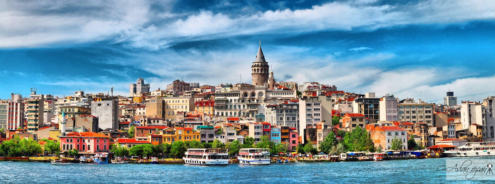

History of Istanbul
Byzantium
During 300s Roman Emperor Constantine the Great, started rebuilding the entire city to make it as remarkable and give monuments to it as those that were present in Rome. In 330s Constantine declared the the city as its capital of the entire Roman Empire.

The Roman Empire
After the death of Theodosius I in 395 the Roman empire divided and this caused Constantinapole to became the capital of Byzantine Empire in the 400s. This is when the city started to became distincly Greek influenced. In 532 the outstanding monument Hagia Sophia was builted.
The Byzantine (Eastern Roman) Empire
After being attacked by the Middle Eastern forces the city became weakened. After this signifacant events, Ottomans led by Sultan Mehmed II was captured in 1453 and the city changed drastically. Its name was also changed to Istanbul.
The Byzantine (Eastern Roman) Empire
Following the WWI the Ottoman Empire was hurt pretty bad. However, after the Turkish War of Independence Istanbul became a part of Turkish Republic